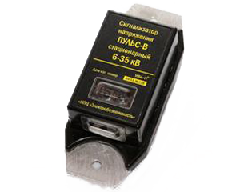
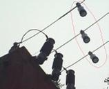

Сигнализатор напряжения стационарный “Пульс-В”
В связи с большим числом несчастных случаев в «Плане основных мероприятий по обеспечению производственной безопасности» ОАО «МРСК Центра и Приволжья» поставлена задача оснащения комплектных распределительных устройств, КТПН, КТП 6-35 кВ стационарными сигнализаторами напряжения (СНС). Они должны предупреждать персонал о наличии напряжения на токоведущих частях электроустановок. Аналогичные задания сформулированы и в планах других МРСК.
В НПЦ «Электробезопасность» Вятского государственного университета, разработаны для установки на токоведущие части простые, надежные и недорогие СНС «Пульс». Они способны питаться энергией электрического поля воздушных ЛЭП напряжением 6 кВ и выше. Отсутствие сменных элементов питания, а также использование материалов и деталей, способных длительное время работать в жестких климатических условиях, позволяет устанавливать их непосредственно на токоведущие части на многолетний срок.
При наличии напряжения СНС «Пульс» формируют импульсные световые сигналы. СНС не требуют ни настройки при монтаже, ни обслуживания во время эксплуатации.
Предприятием ООО «Электробезопасность-Вятка», г. Киров, организовано промышленное производство двух типов стационарных сигнализаторов:
- СНС «Пульс-Н» для наружной установки на провода ЛЭП (например, между разъединителем и КТП).
- СНС «Пульс-В» для внутренней установки на шины КРУ.
Результаты технического совещания в «Кировэнерго»
На техническом совещании в «Кировэнерго» определены места размещения СНС «Пульс» в ОРУ 35/110 кВ и на ТП 6-10/0,4 кВ. Протокол заседания совещания, места установки СНС на плане расположения оборудования и однолинейной схеме первичной коммутации ОРУ-110-35 можно скачать по ссылкам слева.
Достоинства СНС «Пульс»:
- Срок службы – не менее 25 лет.
- Питание энергией емкостных токов утечки ЛЭП (мощность потребления ничтожна – 0,5 мВт).
- Не требуют настройки, технического обслуживания (только внешний осмотр).
- Обеспечивают надежное распознавание пульсирующего светового сигнала о наличии напряжения. В СНС «Пульс-Н» применена система линз и затенитель, в СНС «Пульс-В» световая индикация осуществляется по двум перпендикулярным направлениям.
- Температурный диапазон от –45 до +60 С.
- Материал корпуса способен работать в диапазоне от -120 до +110 С, стоек к ультрафиолетовому излучению.
- Конструкция неразборная, пыле- и влагозащищенная (IP 54).
- Простое крепление к токоведущим частям.
Для повышения надежности контроля следует устанавливать СНС на каждый фазный провод, так как при наличии напряжения даже только на одной фазе, за счет гальванической связи через трансформатор, сигналить будут все три СНС. По этой же причине при выходе из строя одного сигнализатора два оставшихся будут продолжать передавать сигналы.
СНС «Пульс-Н» при установке на провода следует ориентироваться на место, с которого оператору будет удобно наблюдать их сигналы. Для повышения надежности распознавания сигналов СНС «Пульс-Н» нужно располагать вертикально вниз или под небольшим углом к вертикали (рис. 3).
Опытная эксплуатация
Первая партия СНС «Пульс» с марта 2012 г. успешно проходит опытную эксплуатацию в электрических сетях Филиала «Кировэнерго» ОАО «МРСК Центра и Приволжья». СНС «Пульс» были представлены на технических совещаниях в ОАО «МОЭСК» и ОАО «Ленэнерго».
Продажа СНС «Пульс» (после сертификации) начнется во втором квартале 2013 г. По всем возникшим вопросам обращайтесь в компанию ООО «Электробезопасность-Вятка».